Gabriela Wywrocka
AI Operations w marketingu i treściach · systemy agentów AI od planu do pomiaru
Buduję i prowadzę systemy agentów AI, które robią marketing i treści od analizy rynku po gotowy materiał. Wcześniej prowadziłam marketing hotelu, treści w e-commerce i kampanie z twórcami. Każda zakładka pokazuje dowody.
W skrócie
Statystyki kanałów z publicznego YouTube Data API, stan na 16.11.2026. Wyniki hotelu: te same weekendy rok do roku.
Narzędzia, w których pracuję
Co znajdziesz w zakładkach
Jak działa mój system
Jeden proces, który powtarza się dla każdego materiału. Agenci AI wykonują pracę, ja ustalam kierunek, zatwierdzam i odpowiadam za wynik. Bramki jakości zatrzymują błędy, zanim trafią do ludzi.
agent AI
agent + ja
agent AI
agent AI
agenci + ja
agent AI
agent + ja
Przykład: jeden film od analizy do wyniku
- 1
Analiza rynku
Agent zebrał dane kanału i konkurencji i wyciągnął wnioski, które przeczytałam przed decyzją.
fragment raportu z 04.09.2026Hak drugoosobowy wygrywa. Trzy najlepsze tytuły to „JEŚLI TO CZYTASZ…”, „POSŁUCHAJ TEGO, ZANIM…”, „WŁĄCZ TO, GDY…”. Lo-fi do pracy zarabia prawie 3× więcej na widza. - 2
Plan
18 piosenek rozpisanych na różne obszary życia. Pierwszy tytuł od agenta był płaską etykietą, więc bramka go odrzuciła, a ja zatwierdziłam wersję z hakiem.
plan produkcjibramka różnorodności: 16 z 18 obszarów życia (min. 10) PASS tytuł „DZIĘKUJĘ SOBIE DZISIAJ”, bramka haka ODRZUCONY tytuł „JEŚLI TO SŁYSZYSZ, POZWÓL SOBIE ZWOLNIĆ” ZATWIERDZONY 05.09 - 3
Teksty
Agenci napisali 18 tekstów, a krytycy sprawdzili język, rymy i ton.
piosenka 1 z 18, refrenDziękuję za to, co dziś czuję, za zwykły dzień, w którym się raduję. - 4
Produkcja
Muzyka, okładka i montaż powstały w nocy. Rano czekał gotowy film do akceptacji.
- 5
Bramka jakości
Automatyczny odsłuch przepisał każdą piosenkę na tekst i porównał z oryginałem. Dwie poszły do mojego odsłuchu.
raport odsłuchu QA, 05.09.2026plików: 18 czyste: 16 PASS do odsłuchu: 2 (głośniejsze zakończenie utworu) FLAGA - 6
Publikacja
Film wszedł w zaplanowanym terminie, z włączonymi reklamami.
- 7
Pomiar
1 254 wyświetlenia i wnioski do kolejnych odcinków serii lo-fi.
Jak powstaje scenariusz
Scenariusz nie wychodzi z jednego polecenia. Przechodzi przez kilku agentów, z których każdy ma jedną rolę, a na końcu przeze mnie.
agent + ja
agent AI
agent AI
agent AI
agent AI
agent AI
ja
agent AI
Autor i krytyk to zawsze różni agenci. Krytyk nie zna zamiarów autora, więc ocenia tekst tak, jak zobaczy go odbiorca.
Jak wygląda moja praca z systemem
- NocAgenci produkująTeksty, muzyka, grafiki i montaż powstają według planu z kalendarza. Nikt mnie nie budzi.
- RanoRaport stanuJedna strona: co gotowe, co czeka na decyzję, co się nie udało i dlaczego.
- Przed południemAkcepty z telefonuOdsłuchuję i oglądam propozycje, klikam tak albo nie w Telegramie.
- W dzieńMoja częśćNagrania, uwagi do montażu, decyzje o kierunku. Uwagi zamieniam w reguły.
- Co tydzieńPomiarWyniki testów okładek i tytułów, przychód, plan na kolejny tydzień.
Zasady, którymi zarządzam AI
procedury (36) /raport analiza kanału i konkurencji /produkcja nocna produkcja filmów /afirmacjePLrano film od danych do montażu /afirmacjeESrano to samo po hiszpańsku /afirmacjeDErano to samo po niemiecku /janusz kanał finansowy od tematu do publikacji /miniatury okładki do testu A/B /publikacja tytuł, opis, tagi, termin agenci kontroli jakości (17) lyrics-critic korektor tekstów PL, ES, DE critic-verify3 3 krytyków, błąd = zgoda 2 z 3 janusz-liczby-critic każda liczba w 2 źródłach janusz-anatomy-qa kontrola rąk i twarzy postaci shorts-framing-qa kontrola kadru
Tak wygląda system od środka. To fragment prawdziwej listy. Każda procedura to opisany proces, który agent wykonuje krok po kroku, a każdy agent kontroli ma jedno zadanie: znaleźć błąd.
Buduję to z Claude Code: projektuję proces, piszę wymagania, testuję i odbieram. Po każdym błędzie powstaje reguła, a z reguły automatyczna bramka.
Całość pokażę na żywo na rozmowie.
Montaż wideo z AI
Z surowego materiału (aparat, telefon, dron) system przygotowuje gotową propozycję filmu. Ja oglądam, daję uwagi, zmieniam czcionki i rytm, a system nanosi poprawki. Tak powstają vlogi Zacisza: 40 do 60 minut, z rozdziałami, muzyką i napisami.
agent AI
agent AI
agent + ja
agent + ja
agent AI
agent AI
agent AI
ja
Dowody
Co zrobię z nagraniem wykładu albo eventu
Ten sam proces przenoszę na wykłady, konferencje, webinary i eventy firmowe. Pierwszą wersję dostajesz szybko, a poprawki idą w rundach.
Projekty
Cztery marki na jednym systemie. Każdą okładkę możesz kliknąć i sprawdzić licznik na YouTube.
Afirmacje na Dobry Dzień
muzyka z afirmacjami · start 04.2026 · 2 680 subskrypcji · 411 349 wyświetleń · 167 filmów · zarabia na reklamachJanusz Biznesu
finanse osobiste z ironicznym, animowanym narratorem · start 07.2026 · 84 filmy · 47 105 wyświetleńZacisze
vlog z moją twarzą i głosem · 7 430 subskrypcji · 211 051 wyświetleń · program wspierającychKierunek artystyczny i 3 rynki
jedna bohaterka · własny kolor dla każdego rynku · okładki zmieniane z sezonem i testowane A/BTę stronę też zaprojektowałam jako próbkę: animacje i światło są zrobione w czystym kodzie, bez szablonu.
Marketing i reklamy: Dosłońce Resort Wellness & Farm
Head of Marketing / Digital Project Manager · 10.2024–03.2025 · kontrakt projektowy. Hotel przygotowywał się do wyjścia z sieci i przejścia z marki Mercure Racławice Dosłońce na własną markę Dosłońce. Prowadziłam cały marketing: od badania gości, przez nagrania i reklamy, po wynik w sprzedaży pokoi. Raportowałam do Zarządu, odpowiadałam za wzrost przychodu i wskaźniki OCC i ADR, nadzorowałam agencję mediową (kampanie Meta) i PR, przy budżecie reklamowym 8–20 tys. zł miesięcznie zależnie od sezonu.
Jak prowadziłam kampanie hotelu
Wdrożenia dla zespołu hotelu
Przekazanie obowiązków nowej osobie. Spisałam i przeszkoliłam: Google Ads, analitykę, edycję strony i SEO, angielskie wersje podstron, GetResponse, Canvę i porządek na wspólnym dysku.
Kreacje do kampanii Meta. Dla agencji mediowej przygotowywałam zestawy na sezon (andrzejki, Boże Narodzenie, jesień z dziećmi, Mikołaj, restauracja), każdy w wersji pionowej i kwadratowej, z rundami poprawek.
Odpowiedzi na Instagramie i Facebooku, które prowadzą do rezerwacji. Pytania gości w wiadomościach dostawały od razu automatyczną odpowiedź z przejściem do właściwej oferty w systemie rezerwacji, także w nocy i w weekendy.
Mailing w GetResponse. Ścieżki wiadomości dla gości i zainteresowanych ofertą, które prowadziły od pierwszego kontaktu do rezerwacji pakietu.
Materiały z mojej pracy w hotelu
Raport tygodniowy social mediów hotelu, 30.12.2024–5.01.2025, wynik tydzień do tygodnia.

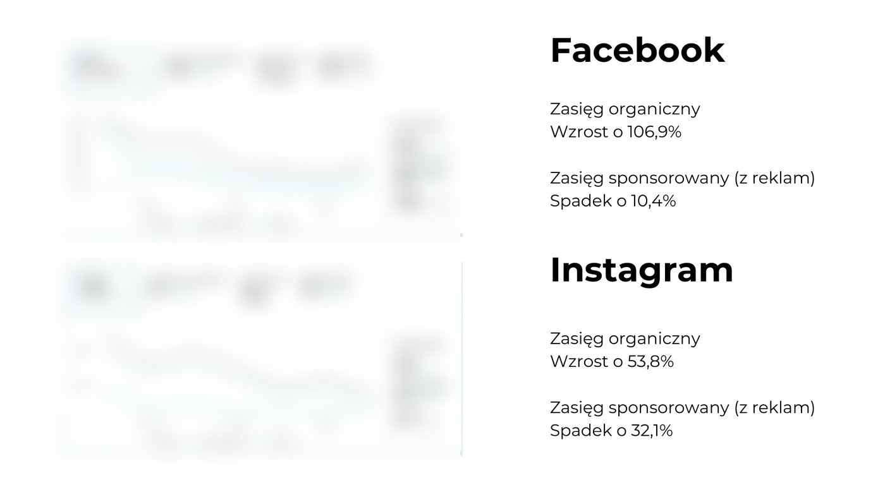
Raport social mediówzasięg Facebook i Instagram, tydzień 30.12–5.01Powiększ
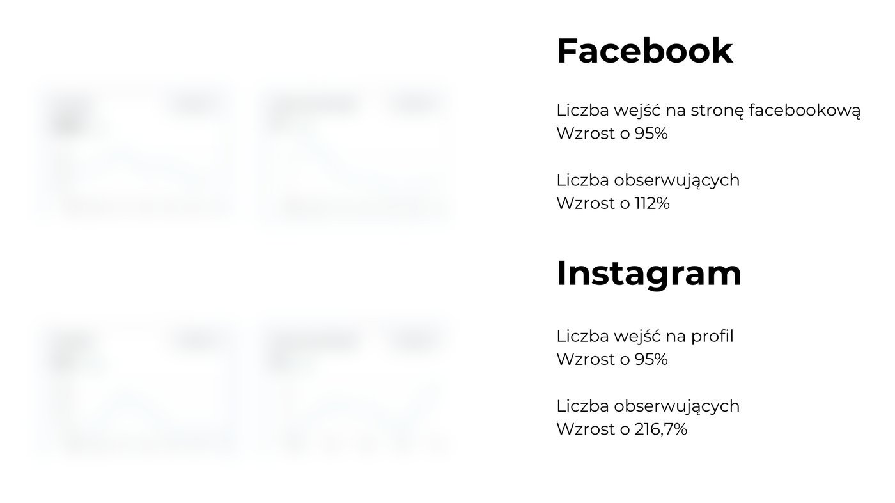
Wzrost obserwującychwejścia na profile i nowi obserwującyPowiększ
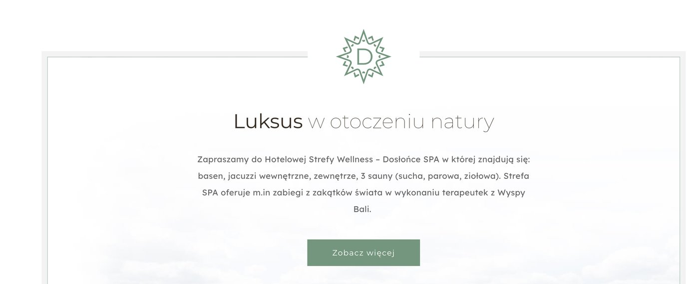
Nowa strona i markasekcja strony z nowym logo Dosłońce, 12.2024Powiększ
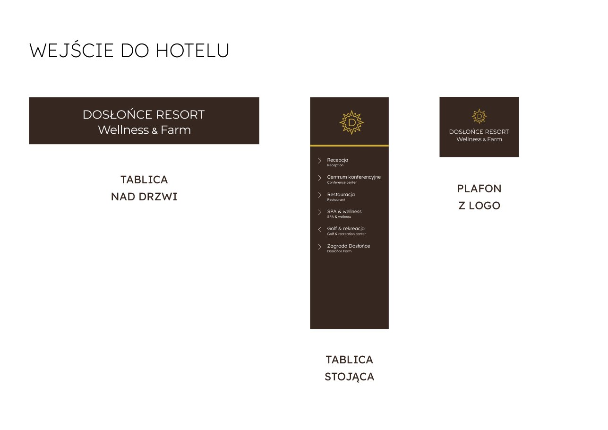
Oznakowanie nowej markiprojekty tablic przy wejściu, 01.2025Powiększ
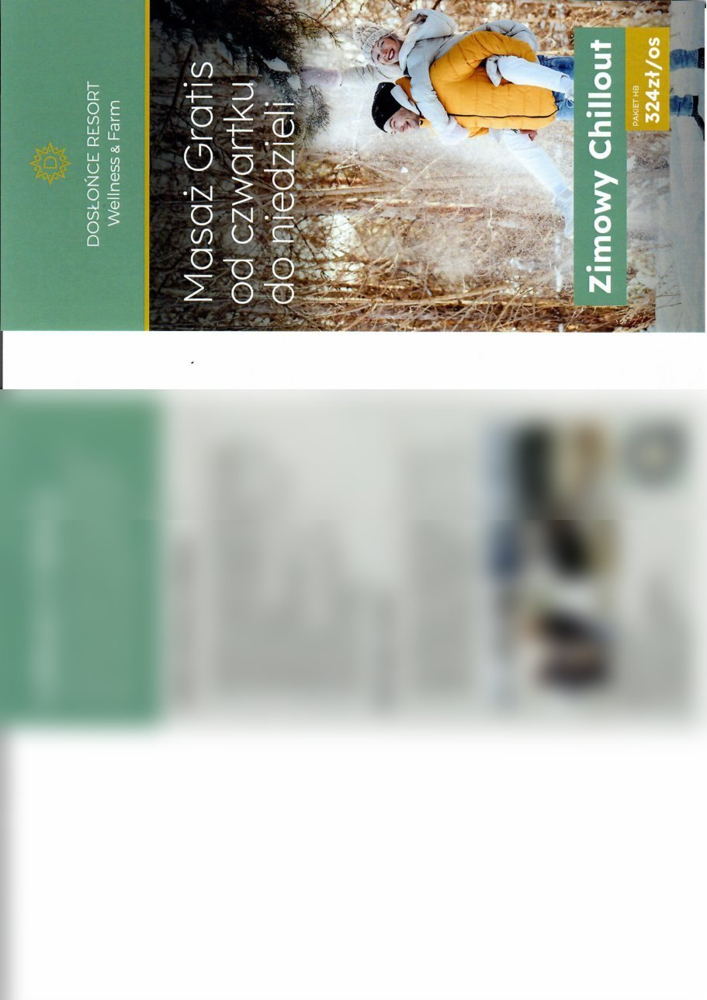
Ulotka pakietu „Zimowy Chillout”oferta pakietowa w nowej identyfikacji, 01.2025Powiększ
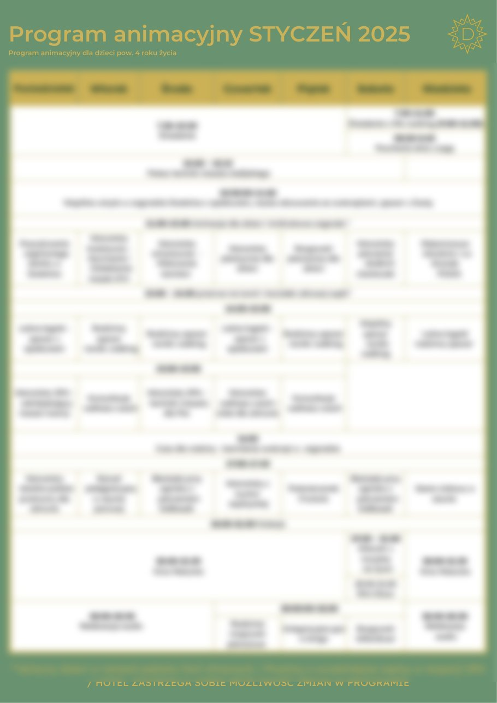
Program animacji, styczeń 2025plan atrakcji dla rodzin na feriePowiększ73 zadania w 9 obszarach przejścia na nową markę: identyfikacja, druki, materiały cyfrowe, szablony Canva, informacje w pokojach, gastronomia, oznakowanie zewnętrzne i wewnętrzne, internet.
Do 19.01.2025 zamkniętych było 42 z 73, reszta miała termin na styczeń i luty. Całość szła w jednym arkuszu ze statusem i osobą odpowiedzialną przy każdym zadaniu.
Baza wiedzy o hotelu dla ChatGPT (12.2024): wizja, 67 pokoi, strefa wellness i SPA, farma, gastronomia i atrakcje opisane w jednym dokumencie.
Dzięki temu zespół pisał oferty, opisy pakietów i posty spójnym językiem nowej marki, bez tłumaczenia ChatGPT od zera, czym jest hotel.
Filmy, które robiłam dla hotelu
Po 3 miesiącach przerwy kanał YouTube hotelu znów zaczął regularnie publikować: 27 krótkich filmów w czasie mojego kontraktu, łącznie 45 639 wyświetleń. Sezon świąteczny, ferie i pierwszy film pod nową marką Dosłońce.
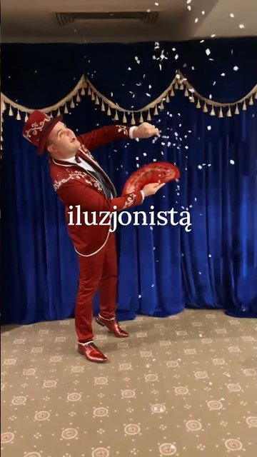
Andrzejki05.11.2024 · 197 wyśw.Odtwórz ▶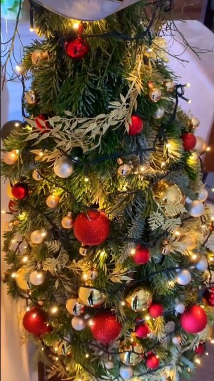
Mikołajki19.11.2024 · 188 wyśw.Odtwórz ▶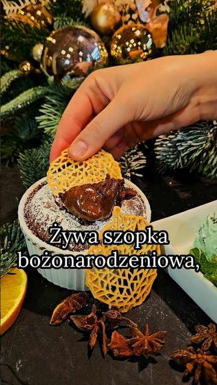
Święta, żywa szopka05.12.2024 · 1 790 wyśw.Odtwórz ▶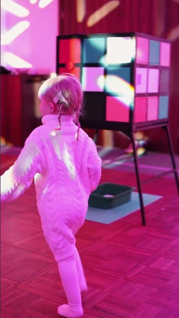
Sylwester 2024/202527.11.2024 · 3 003 wyśw.Odtwórz ▶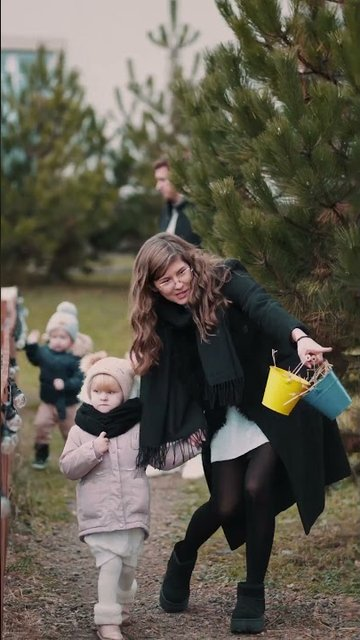
Ferie zimowe27.11.2024 · 14 321 wyśw.Odtwórz ▶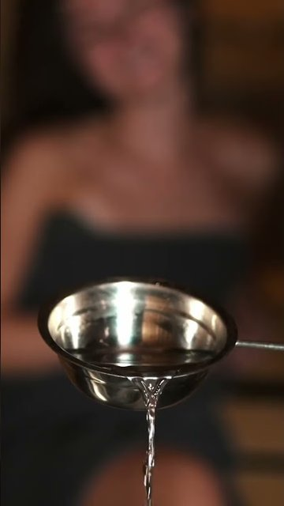
Nowa marka Dosłońce21.03.2025 · 1 067 wyśw.Odtwórz ▶Instagram hotelu w czasie mojego kontraktu
65 postów i rolek, 1 532 polubienia. Poniżej cztery z najlepszym wynikiem.
Jak to się łączyło
Twórcy: to już robiłam
Zaproszenie przez wiadomość na Instagramie. W ten sposób zaprosiłam do hotelu Justynę z profilu „Normalni ludzie”. Z jej pobytu powstały posty, które dały hotelowi zasięg wśród rodzin z dziećmi.
Wcześniej przez 2 lata prowadziłam kampanie z twórcami w agencji Stars Impresariat / Tears of Joy.
- Agent szuka twórców pasujących do gości hotelu i sprawdza ich odbiorców.
- Przygotowuje osobistą wiadomość do każdej osoby, bez kopiuj-wklej.
- Wiadomość wysyłam ja, po przeczytaniu. Automat nie pisze do ludzi w moim imieniu.
- Po pobycie agent zbiera wyniki postów i dopisuje je do raportu kampanii.
To samo dziś, na systemie AI
Model: tak poprowadziłabym hotel terazTak działa już mój system dla kanałów YouTube. W hotelu zmienia się cel: zamiast wyświetleń liczy się sprzedaż pokoi.
Klinika HOLI: treści od analizy do publikacji
Social Media & Content Coordinator · 03.2024–09.2024 · kontrakt projektowy. HOLI to klinika leczenia otyłości działająca online. Odpowiadałam za plan treści i jego wykonanie: od tematów, przez teksty na blog i filmy, po publikację.
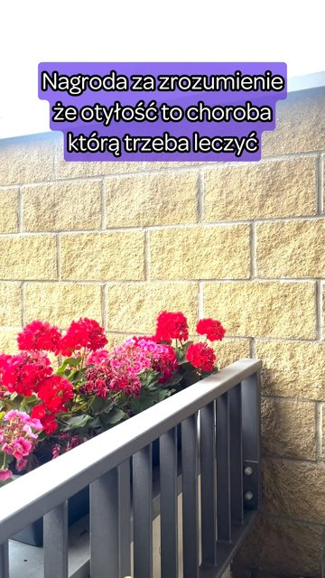
Otyłość to choroba06.09.2024 · 61 polubieńOdtwórz ▶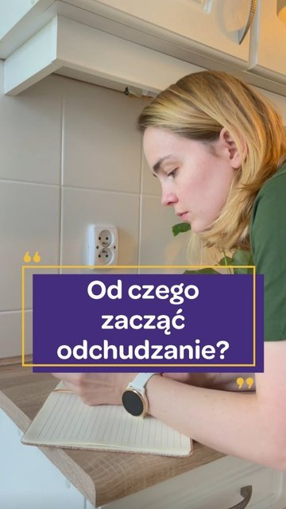
Od czego zacząć odchudzanie?22.05.2024 · 49Odtwórz ▶ Mózg przed analogami GLP-129.05.2024 · 34Odtwórz ▶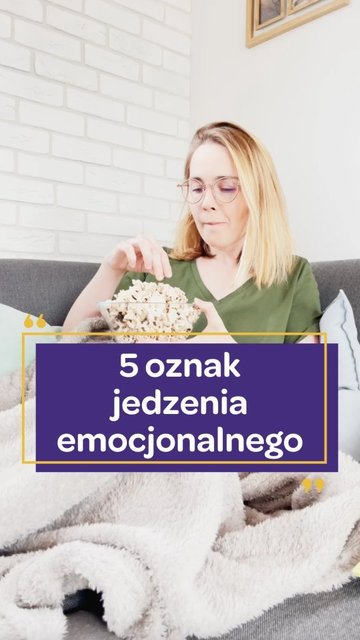
5 oznak jedzenia emocjonalnego18.06.2024 · 29Odtwórz ▶ Rozmowa z ekspertką30.04.2024 · 25Odtwórz ▶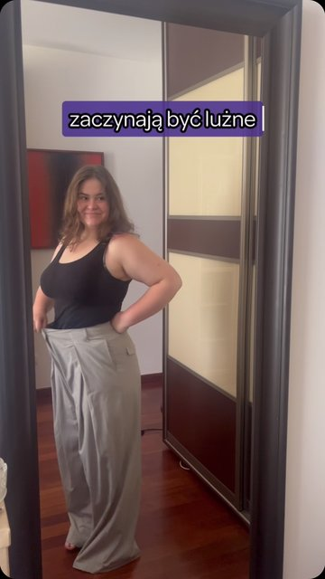
Małe sukcesy27.08.2024 · 23Odtwórz ▶Instagram kliniki (@klinikaholi) w czasie mojej współpracy, 03–09.2024. Dane z Instagram API, 16.11.2026.
- Analizę rynku i propozycję kalendarza przygotowuje agent, ja wybieram tematy.
- Artykuły i scenariusze przechodzą przez krytyka i kontrolę faktów. W tematach zdrowia każde twierdzenie ma źródło.
- Montaż, napisy i wersje pionowe robi agent, ja akceptuję.
- Publikacja idzie z kalendarza, a wyniki wracają do planu.
Wcześniej w marketingu
IT i bezpieczeństwo
LTIMindtree · Engineer, Cloud & Infrastructure Management
03.2024–12.2024 · kontrakt projektowy
- Wsparcie i monitoring infrastruktury chmurowej Microsoft Azure i AWS.
- Praca z zespołami IT i klientami korporacyjnymi w środowisku międzynarodowym.
- Dokumentacja procesów IT i udział w projektach automatyzacji środowisk chmurowych.
Co z tego wynika dla marketingu z AI
Rozumiem, jak działa chmura, dostęp i monitoring. Dlatego mój system od początku ma zasady bezpieczeństwa, a nie tylko agentów, którzy produkują treści.
Jak zabezpieczam swój system AI
Konfiguracji nie publikuję. Szczegóły pokażę na rozmowie.
Pokażę ten system na żywo
Szukam roli zdalnej na B2B (albo hybrydowej w Krakowie), w której zbuduję i poprowadzę system AI dla zespołu marketingu albo treści. Chętnie poprowadzę też marketing hotelu albo resortu, od nagrań po promocję. W 20 minut pokażę, jak system działa od środka.